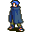

Silvear¶Where to find Silvear: Brightport: Brightport 1
{ .sprite }
| Type | NPC (can be spoken to; cannot be attacked) |
| Found in | Brightport |
| Entry ID | brightportthieves1 |
| Introduced | v0.8.16.1 |
Quests¶
- Priceful vengeance: stage 40
- Brightport story flags (hidden flag): stages 15, 20, 25, 30, 31, 132, 133
Dialogue simulator¶
Set your quest stages and items, then talk to Silvear. Same rules as the game: same checks, same options, same effects.
Rules verified against v0.8.18 game code (ConversationController.java) and dialogue data.
Dialogue (33 lines)
Exactly as in the game files. Each line appears once; links jump to where a choice leads.
brightport_silvear_start (silent check: the first matching branch below is taken)
- Next (if reached stage 15 of Brightport story flags (hidden flag)) → brightport_silvear_staple
- Next (if NOT reached stage 15 of Brightport story flags (hidden flag)) → brightport_silvear_initial
brightport_silvear_staple Silvear: “Hello, $playername. Any news?”
- “What is it that you were selling again?” → brightport_silvear_selector0
- “Can you tell me about Andor again?” (if reached stage 30 of Brightport story flags (hidden flag)) → brightport_silvear_andor2
brightport_silvear_initial Silvear: “Hello there, $playername. My name is Silvear. I'm a merchant of sorts, though my merchandise is a bit, unorthodox.”
- “What is it that you sell?” → brightport_silvear_selector0
- “How do you know my name?” (if NOT reached stage 2 of Immaculate kidnapping) → brightport_silviar_initial1
- “How do you know my name?” (if reached stage 2 of Immaculate kidnapping) → brightport_silviar_initial2
brightport_silvear_selector0 (silent check: the first matching branch below is taken)
- Next (if NOT reached stage 30 of Brightport story flags (hidden flag)) → brightport_silvear
- Next (if reached stage 30 of Brightport story flags (hidden flag)) → brightport_silvear_1
brightport_silvear_andor2 Silvear: “As I mentioned, I'm a merchant. I can tell you about Andor, but it will cost you. Say, 500 gold?” — effects: sets stage 30 of Brightport story flags (hidden flag), sets stage 132 of Brightport story flags (hidden flag)
- “Hey, I've already paid you once!” (if reached stage 31 of Brightport story flags (hidden flag)) → brightport_silvear_andor5
- “For my brother it is worth that much.” (if pay 500 gold) → brightport_silvear_andor3
- “I don't have that gold on me.” (if NOT have 500 gold) → brightport_silvear_bye
brightport_silviar_initial1 Silvear: “I have many ears. I know who you are, and that you are searching for your brother.”
- “That doesn't make me any less suspicious of you. So, what is it that you trade?” → brightport_silvear
brightport_silviar_initial2 Silvear: “I know the names of my fellow Guild members, yours especially.”
- “That doesn't make me any less suspicious of you. So, what is it that you trade?” → brightport_silvear
brightport_silvear Silvear: “I specialize in trading information, rumors, stories, and the like. Not something I could sell to a kid like you.” — effects: sets stage 15 of Brightport story flags (hidden flag)
- Next (if NOT reached stage 30 of Brightport story flags (hidden flag)) → brightport_silvear_andor
brightport_silvear_1 Silvear: “I specialize in trading information, rumors, stories, and the like. Not something I could sell to a kid like you.”
- “It happens that I'm interested in the local guard commander. Can you tell me anything about him?” (if reached stage 132 of Brightport story flags (hidden flag); NOT reached stage 40 of Priceful vengeance; NOT reached stage 139 of Brightport story flags (hidden flag); reached stage 30 of Priceful vengeance) → brightport_silvear0
brightport_silvear_andor5 Silvear: “Can't complain when you're the one asking.”
- “Tch, fine. [Give him the gold]” (if pay 500 gold) → brightport_silvear_andor3
- “I don't have that gold on me.” (if NOT have 500 gold) → brightport_silvear_bye
brightport_silvear_andor3 Silvear: “Thanks for the business kid.” — effects: sets stage 31 of Brightport story flags (hidden flag)
- Next → brightport_silvear_andor4
brightport_silvear_bye Silvear: “That amount shouldn't be too difficult for an adventurer like you. I'll be waiting.”
brightport_silvear_andor Silvear: “Though, you might be interested in what I know about your brother, Andor.”
- “Andor is my dear brother, I will do whatever it takes to find him, tell me what you know.” → brightport_silvear_andor2
- “Of course I am! That damn kid has caused me so many problems that I want to find him and smack him in the face.” → brightport_silvear_andor2
brightport_silvear0 Silvear: “You mean Gunfryk? He's after the rougher thieves, the ones who step outside Feygard law. Never bothered my work, so I don't bother his. But his guards? They gawk at me like hawks too.”
- “Ah, that's interesting but I need something that I can "use"” → brightport_silvear1_selector
brightport_silvear_andor4 Silvear: “I've known your brother since his days as a student here at the academy. We spoke a few times; he was mostly interested in speaking to the boss of our Guild here in Brightport. That's all.”
- “I need to talk with your boss then, where can I find them?” → brightport_silvear_boss
- “Thanks for the information. [Leave]” → conversation ends
brightport_silvear1_selector (silent check: the first matching branch below is taken)
- Next (if NOT reached stage 133 of Brightport story flags (hidden flag)) → brightport_silvear1
- Next → brightport_silvear1_2
brightport_silvear_boss Silvear: “Our boss? Let me think.”
- Next → brightport_silvear_selector
brightport_silvear1 Silvear: “I do have something on him in case our current arrangement ever went sour, but you would have to do a good job of convincing me to hear it.”
- “Is this convincing enough? [Offer 1,000 gold.]” (if pay 1,000 gold) → brightport_silvear2
- “I can't pay you a lot without being sure if the information will help me, best I can do is this. [Offer 500 gold]” → brightport_silvear4
- “Im getting rid of your biggest problem without you lifting a finger, Is that not good enough?” → brightport_silvear3
brightport_silvear1_2 Silvear: “We've talked about this before. Im confident in my skill, the information I possess will be enough. With that in mind 1,500 gold is sufficient.”
- “Fine, have your price. [Give him the gold.]” (if pay 1,500 gold) → brightport_silvear2
- “I don't have that much gold on me, I'll be back later.” (if NOT have 1,500 gold) → conversation ends
brightport_silvear_selector (silent check: the first matching branch below is taken)
- Next (if NOT reached stage 20 of Brightport story flags (hidden flag); NOT reached stage 100 of Key of Luthor) → brightport_silvear_directions0
- Next (if NOT reached stage 20 of Brightport story flags (hidden flag)) → brightport_silvear_directions1
- Next (if reached stage 20 of Brightport story flags (hidden flag)) → brightport_silvear_directions
brightport_silvear2 Silvear: “Pleasure doing business with you.”
- Next → brightport_silvear_gunfryk
brightport_silvear4 Silvear: “Rest assured, I would not risk my contingency on shoddy information, with that in mind 1,500 gold sound like a better price.” — effects: sets stage 133 of Brightport story flags (hidden flag)
- “Fine, have your price. [Give him the gold.]” (if pay 1,500 gold) → brightport_silvear2
- “I'll be back when I have the gold. [Leave.]” → conversation ends
brightport_silvear3 Silvear: “I would sooner trust in Gunfryk dying of old age, $playername. My plans I carry alone; for yours, you'll have to pay. 1,500 is my asking price.” — effects: sets stage 133 of Brightport story flags (hidden flag)
- “Fine, have your price. [Give him the gold.]” (if pay 1,500 gold) → brightport_silvear2
- “I'll be back when I have the gold. [Leave.]” → conversation ends
brightport_silvear_directions0 Silvear: “Yeah I don't think you should speak to me about that, bye.”
brightport_silvear_directions1 Silvear: “For you, it'll be 2,000 gold coins. It's our hideout, I can't just give out access for free.”
- “That price seems a bit excessive "For you". I've done a lot for the Guild. I'm the one who took down Crackshot.” (if reached stage 50 of The ruthless Crackshot) → brightport_silvear_direction4
- “I can guarantee you a lot of trouble if you don't let me in, for free.” → brightport_silvear_bye1
- “The only thing wider than my purse is my patience for the likes of you. [pay him the gold]” (if pay 2,000 gold) → brightport_silvear_directions3
- “I don't have that gold on me.” → brightport_silvear_bye
brightport_silvear_directions Silvear: “I already told you where to go. Head inside and use the entrance in the back. Thanks for the free gold though.”
brightport_silvear_gunfryk Silvear: “When he arrived here and some of my acquaintances were sent to the Feygard prisons, I had to collect some information for safety measures. Our guard commander here had a habit of visiting a certain "establishment" in Nor city, here are…” — effects: sets stage 40 of Priceful vengeance
- “This could work. [Leave.]” → conversation ends
brightport_silvear_direction4 Silvear: “Sure, that was impressive for someone your age, but what goes down in Umar's turf has little to do with the Guild here in Brightport.”
- “Must I remind you that the profits from Fallhaven's Guild deals with Sullengard are also reaching the Guild here in…” (if reached stage 10 of Another ruthless Crackshot) → brightport_silvear_directions5
- “Argh, fine, let's return to the previous conversation.” → brightport_silvear_directions1
brightport_silvear_bye1 Silvear: “You won't get far with that attitude. Come back when you've grown up a bit.”
- “[He is right, that was childish of me.]” → conversation ends
- “[Tch, if we weren't inside a town, I could show him.]” → conversation ends
brightport_silvear_directions3 Silvear: “To find our hideout, go inside via the door on the right. Best of luck to you.” — effects: sets stage 25 of Brightport story flags (hidden flag), sets stage 20 of Brightport story flags (hidden flag)
brightport_silvear_directions5 Silvear: “OK, OK. Fine, I apologize. The Guild's policy is for me to inform new members and useful visitors of the hideout for free.”
brightport_silvear_directions6 Silvear: “The entire fee thing was my own idea. Please don't tell the boss.”
brightport_silvear_directions7 Silvear: “To find our hideout, head inside via the door on the right. Best of luck to you.” — effects: sets stage 20 of Brightport story flags (hidden flag)
Version history¶
| Version | Change |
|---|---|
| v0.8.16.1 | Added Dialogue: 33 lines added |
| v0.8.18 | Dialogue: 8 lines changed · text: “I would sooner trust in Gunfryk dying of old age, $playername. My pla…” → “I would sooner trust in Gunfryk dying of old age, $playername. My pla…” · text: “We've talked about this before. Im confident in my skill, the informa…” → “We've talked about this before. Im confident in my skill, the informa…” |
Verified against v0.8.18 and every earlier release back to v0.7.0 (game data compared release by release).
Technical information
| Entry ID | brightportthieves1 |
| Spawn group | brightportthieves1 |
| Loot table | – |
| Conversation | brightport_silvear_start |
| Faction | – |
| Movement | – |
| Icon | monsters_rogue1:0 |
| Defined in | res/raw/monsterlist_brightport.json |
Raw data:
{
"id": "brightportthieves1",
"name": "Silvear",
"iconID": "monsters_rogue1:0",
"unique": 1,
"phraseID": "brightport_silvear_start"
}
Community notes¶
Written by players, not generated from game data. Observations: what players notice in-game · Lore: the in-world story · Trivia: real-world facts, references, development history · Theory / speculation: unconfirmed ideas; may just be unfinished content
Observations¶
No notes yet. Contributions are welcome: add a note.
Lore¶
No notes yet. Contributions are welcome: add a note.
Trivia¶
No notes yet. Contributions are welcome: add a note.
Theory / speculation¶
No notes yet. Contributions are welcome: add a note.
Data from v0.8.18